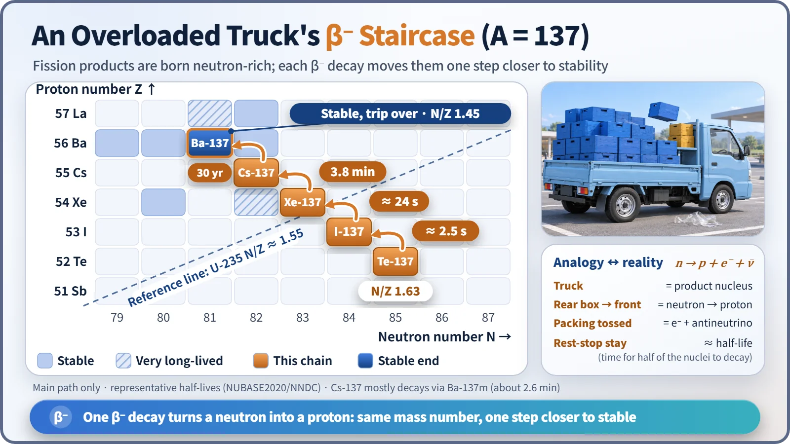
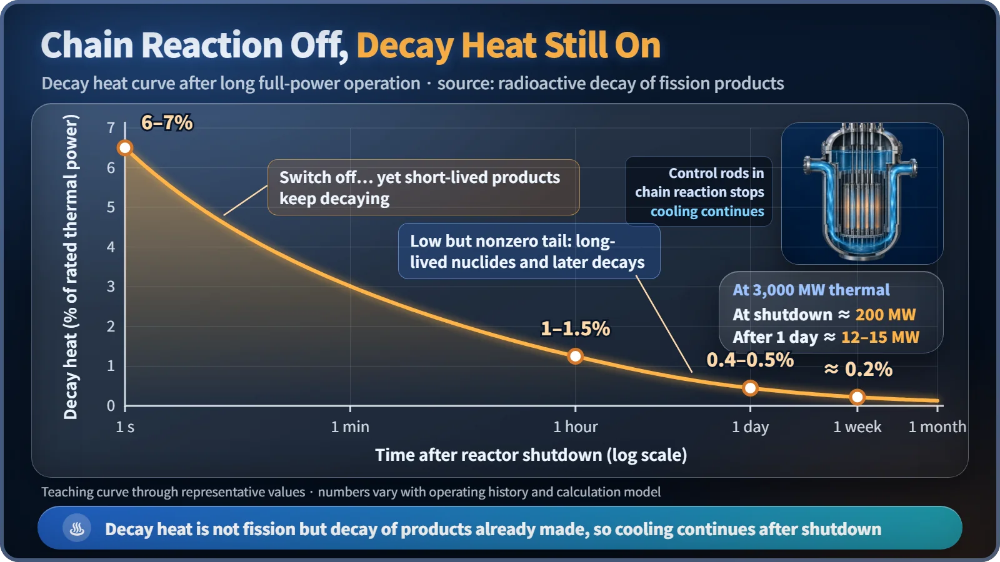

Nuclear Reactions & Fission · 030
Like an Overloaded Truck Rearranging Its Load at Every Rest Stop — Why Fission Products Are Radioactive
Split uranium's neutron-heavy load between two smaller nuclei and both are overloaded. Beta decay sorts the excess one neutron at a time, and the energy released is decay heat.
Fission products are radioactive because they split uranium's high neutron-to-proton ratio between them, leaving each piece with too many neutrons for its size. They shed the excess one neutron at a time through beta decay, some within seconds and some over decades, and the energy released along the way is the decay heat that keeps a shut-down reactor warm. [1]
The switch is off, so why is it still hot?
Once the control rods drop into the core, the chain reaction collapses within seconds and fission power plunges. Yet the core is still putting out heat equal to 6–7% of its operating power. In a large plant rated at about 3,000 MW thermal, that is roughly 200 MW of heat.
The source is the pieces left behind by fission, the fission products: the medium-sized nuclei formed when uranium splits. Almost every one of them is born radioactive. Why? [2]
Inheriting uranium's loading ratio
The key is the ratio of neutrons (N) to protons (Z) in a nucleus. A nucleus that lasts needs an N/Z that suits its size. Protons repel one another electrically, so bigger nuclei need more neutrons to hold out against that repulsion.
Uranium-235 has 92 protons and 143 neutrons, an N/Z of about 1.55. Stable nuclei in the mass range where fission products cluster (mass numbers around 90 to 140) have N/Z of about 1.25 to 1.45. Barium-137, the only stable nucleus with mass number 137, has 81/56, about 1.45.
When uranium splits, its neutrons and protons are mostly shared out in roughly the original ratio. Suppose uranium-235 absorbs a neutron and splits into tellurium-137, zirconium-97 and 2 neutrons. The two pieces together hold 142 neutrons and 92 protons, about 1.54, almost uranium's ratio. Tellurium-137 alone is 85/52, about 1.63, which is 4 more neutrons than stable barium-137 of the same mass number. Even after 2 or 3 neutrons are flung out at the moment of fission, the excess remains. [3]
| Nucleus | Protons (Z) | Neutrons (N) | N/Z |
|---|---|---|---|
| Uranium-235 | 92 | 143 | about 1.55 |
| Tellurium-137 (fission product) | 52 | 85 | about 1.63 |
| Barium-137 (stable) | 56 | 81 | about 1.45 |
The overloaded truck's journey
Imagine a big semi-trailer loaded to its proper ratio, and the load then split between two small trucks at that same ratio. What was right for the big rig is an overload for the small ones, with boxes piled up in the rear. So each truck stops at every rest stop to sort its load one box at a time: move one box from the rear to the front, and toss the packing material that comes loose.
In a nucleus, this sorting is beta (β⁻) decay. One neutron turns into a proton, sending out an electron (the beta ray) and a very light antineutrino. The rear box is a neutron, the front box a proton, and the packing the electron and antineutrino. The box is moved, not thrown away, so the mass number stays the same: one more proton, one fewer neutron. [3]

| Step | Half-life |
|---|---|
| Tellurium-137 → iodine-137 | about 2.5 seconds |
| Iodine-137 → xenon-137 | about 24 seconds |
| Xenon-137 → cesium-137 | about 3.8 minutes |
| Cesium-137 → barium-137 (stable) | about 30 years |
At the early rest stops, where the overload is worst, the truck finishes in seconds; the closer it gets to a proper load, the longer it generally stays. At the last stop, cesium-137, it stays 30 years, which is why cesium-137 comes up so often in discussions of nuclear plants. Right after sorting, some fission products also put a box out of the truck entirely, emitting a neutron. Those are the delayed neutrons that make reactor control much easier.
Heat from every round of sorting: decay heat
Each beta decay releases energy as electrons, gamma rays and so on, which becomes heat when absorbed by the surrounding fuel. With countless overloaded trucks on the road inside a reactor, the sorting goes on even after the chain reaction is switched off. This is decay heat. [2] [4]

| Time after shutdown | Decay heat (% of rated thermal power) |
|---|---|
| Right after shutdown | about 6–7% |
| 1 hour | about 1–1.5% |
| 1 day | about 0.4–0.5% |
| 1 week | about 0.2% |
Short-lived products sort busily at first and quickly finish, so the heat drops fast; later only the long-staying ones remain and the decline slows. For a reactor of about 3,000 MW thermal, even 0.5% after a day is more than ten megawatts. That is why cooling never stops after shutdown, and why spent fuel is cooled in a pool for several years before storage.
Decay heat is not fission secretly carrying on; it comes from products that already exist. Nor do radioactive fission products all last for decades: most change within seconds or minutes, and only a minority, such as cesium-137 and strontium-90 (both with half-lives of about 30 years), linger. Because that minority lingers, it takes center stage in spent-fuel management.
Key takeaways
Fission products are radioactive not because anyone made them dangerous, but because they split the heavy nucleus's high N/Z between them almost unchanged. Beta decay turns the excess neutrons into protons one at a time, in seconds at the front of the chain and over decades at its tail, and the energy released is decay heat. That is why reactors are designed on the premise that they still need cooling after they are switched off.